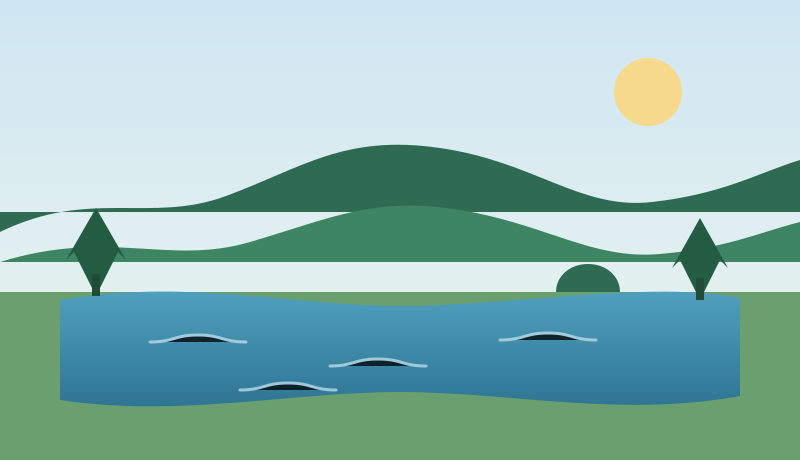
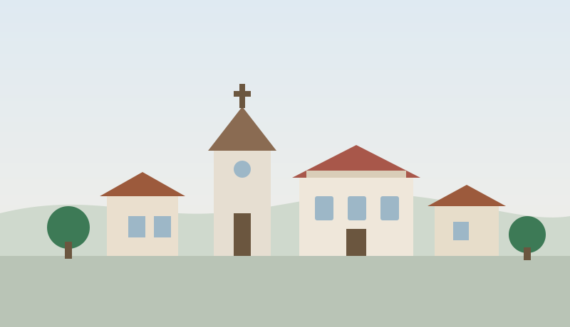

Découvrir Saint-Mathieu
Un bourg limousin à la pointe sud-ouest de la Haute-Vienne, entre bocage, forêts et plans d'eau, au cœur du Parc naturel régional Périgord-Limousin.
Carte d'identité de la commune
1 081 habitants
Soit environ 27 habitants au km². Les habitants sont appelés les Mathuséens.
40,74 km²
Plus de 4 000 hectares de bocage, de prairies et de forêts.
225 à 435 m
Un relief de collines, à l'extrémité des Monts de Châlus.
Aux trois frontières
À la limite de la Haute-Vienne, de la Charente et de la Dordogne.
| Code postal | 87440 |
|---|---|
| Code INSEE | 87168 |
| Département | Haute-Vienne (87) |
| Région | Nouvelle-Aquitaine |
| Intercommunalité | Communauté de communes Ouest Limousin |
| Gentilé | Mathuséens, Mathuséennes |
Le plan d'eau et la base de loisirs
Le complexe touristique de Saint-Mathieu est l'un des grands atouts de la commune : 22 hectares d'aménagements autour d'un plan d'eau de 14 hectares, dans un environnement préservé.
Le site se prête à la promenade en famille, à la pêche et à la détente. La baignade y est surveillée pendant la saison estivale ; les dates et horaires de surveillance sont affichés sur place et en mairie avant chaque saison.
C'est une destination de tourisme vert appréciée, à proximité immédiate du bourg et de ses commerces.

Une commune du Parc naturel régional
Saint-Mathieu adhère à la charte du Parc naturel régional Périgord-Limousin, créé pour préserver et valoriser un territoire rural remarquable à cheval sur la Haute-Vienne, la Charente et la Dordogne.
Cette appartenance engage la commune dans la protection des paysages de bocage, des milieux aquatiques et de la biodiversité, ainsi que dans un tourisme respectueux de l'environnement.
Forêts et bocage
Feuillus et résineux alternent avec les prairies et les haies, dessinant les paysages typiques du Limousin.
Milieux aquatiques
Étangs, ruisseaux et zones humides abritent une faune et une flore protégées.
Vie rurale
Agriculture, forêt et artisanat façonnent le territoire et son identité.
Randonnées et promenades
Des sentiers balisés traversent prairies, hameaux et forêts, offrant des points de vue sur les plateaux et les Monts de Châlus.
À proximité, le tracé de l'ancien chemin de fer dit « le Tacot », qui reliait Saint-Pardoux-la-Rivière à Saint-Mathieu entre 1912 et 1934, se parcourt aujourd'hui à pied, au fil d'une promenade familiale.
Les fiches des circuits sont disponibles en mairie et auprès de l'office de tourisme du territoire.
Avant de partir
- Chaussures adaptées : les chemins peuvent être boueux.
- Refermez les barrières et respectez les cultures et les troupeaux.
- Tenez les chiens en laisse à proximité des animaux.
- Remportez vos déchets.
- Prudence en période de chasse : renseignez-vous en mairie.
Patrimoine et histoire

Ancien chef-lieu de canton, Saint-Mathieu a longtemps joué un rôle de bourg-centre pour les communes alentour : services, commerces, marché, établissements scolaires.
Le bourg conserve un patrimoine rural caractéristique du Limousin : église, place centrale, maisons de pierre et de granit, croix de chemin et fontaines disséminées dans les villages.
L'arrivée du « Tacot » au début du XXe siècle, puis sa disparition en 1934, ont marqué l'histoire des déplacements dans ce secteur rural.
Séjourner à Saint-Mathieu
Gîtes, chambres d'hôtes et hébergements de plein air permettent de séjourner à proximité du plan d'eau. Le bourg offre commerces de proximité et restauration.
À voir aux alentours
Les Monts de Châlus, les sources de la Dronne, les lacs de Haute-Charente et les villages de caractère du Périgord vert sont à portée d'excursion.
Accès
Saint-Mathieu se situe à la jonction de trois départements. La commune est reliée par routes départementales à Rochechouart, Châlus et Nontron.
Informations touristiques
La mairie et l'office de tourisme du territoire vous renseignent sur les hébergements, les activités et les manifestations de la saison.